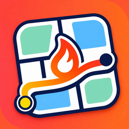

HypeMap利用規約
1. このアプリについて
HypeMap（以下「本アプリ」）は、地図の上にイベントやお店の盛り上がりを表示し、利用者が写真や動画を投稿して共有するサービスです。運営者は 雪山しょんた（以下「運営」）です。
2. アカウント
本アプリは端末ごとに匿名のアカウントを作ります。保存・投稿・コメント・報告などには、Apple またはメールでのサインインと、この規約への同意が必要です。アカウントは本人だけが使い、他人に譲渡できません。
3. 投稿のルール
投稿できるのは、その場所・そのイベントで自分が撮った写真や動画、または自分に権利があるものに限ります。運営は、不快・不適切なコンテンツ（性的・暴力的・差別的な内容、嫌がらせ、脅し、他者を傷つけるもの、法令や公序良俗に反するもの）や、ほかの利用者を困らせる行為を一切認めません。他人の顔が大きく写るもの、営利目的の宣伝も投稿できません。不適切な言葉を含む投稿・コメント・名前は送れないようにしています。違反した投稿は予告なく削除し、違反した利用者のアカウントを停止します。
4. 投稿の扱い
投稿の著作権は投稿者に残ります。投稿者は、本アプリ内での表示、サムネイル化、共有用の画像の生成、および本アプリの紹介のために、運営が無償で利用することを許諾します。投稿はいつでも自分で削除できます。
5. イベント情報
運営が調べて載せたイベント情報は、主催者・会場・自治体などの公式の情報をもとにし、各イベントに出典を示していますが、日時・場所・料金の正確さを保証しません。来場前に公式の案内をご確認ください。間違いは「報告」から知らせてください。
6. HypeMap Plus
HypeMap Plus は自動更新のサブスクリプションです（月額・年額）。通知登録を何件でもできること、2 か月より先のイベントの公式ページやチケットを開けること、投稿する人のための機能（投稿ごとの数字、長い動画、写真の枚数、投稿後の編集など）が使えます。代金は Apple ID に請求され、期間終了の 24 時間前までに解約しない限り自動で更新されます。解約と管理は iOS の設定からできます。購入済みの期間の返金は Apple の規定に従います。
7. 通報とブロック
利用者は、投稿・コメントを通報し、表示しないようにし、他の利用者をブロックできます。通報した投稿や表示しないを選んだ投稿は、その端末ですぐに表示されなくなります。運営は通報を 24 時間以内に確認し、規約に反するものは削除し、投稿した利用者のアカウントを停止します。アプリの設定の「不適切な投稿・利用者を運営に知らせる」や hype.map.official@gmail.com からも知らせることができます。
8. 禁止事項
不正アクセス、いいね数や表示回数の操作、他人になりすます行為、運営の許可のないデータの収集や転載を禁止します。
9. 免責
本アプリは現状のまま提供します。運営は、本アプリの利用や、表示された情報にもとづく行動によって生じた損害について、故意または重過失がある場合を除き責任を負いません。
10. 変更
運営はこの規約を変更することがあります。重要な変更はアプリ内でお知らせします。変更後に本アプリを使い続けた場合、変更に同意したものとします。
11. 準拠法・裁判所
この規約は日本法に従い、紛争は運営の所在地を管轄する裁判所を第一審の専属的合意管轄裁判所とします。
12. お問い合わせ
運営への連絡は hype.map.official@gmail.com まで。